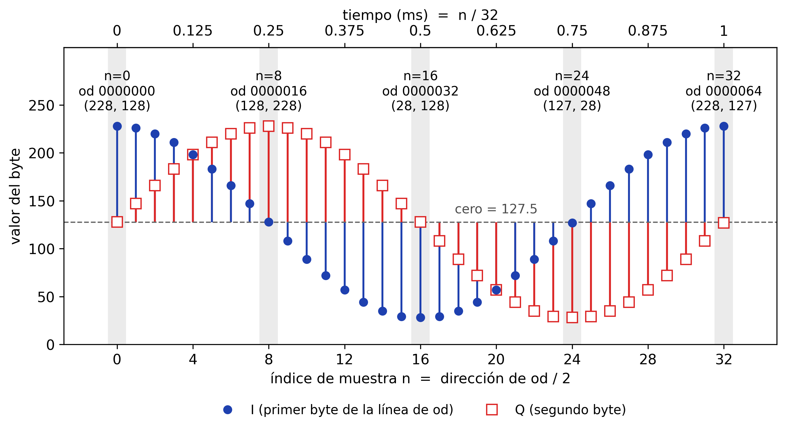
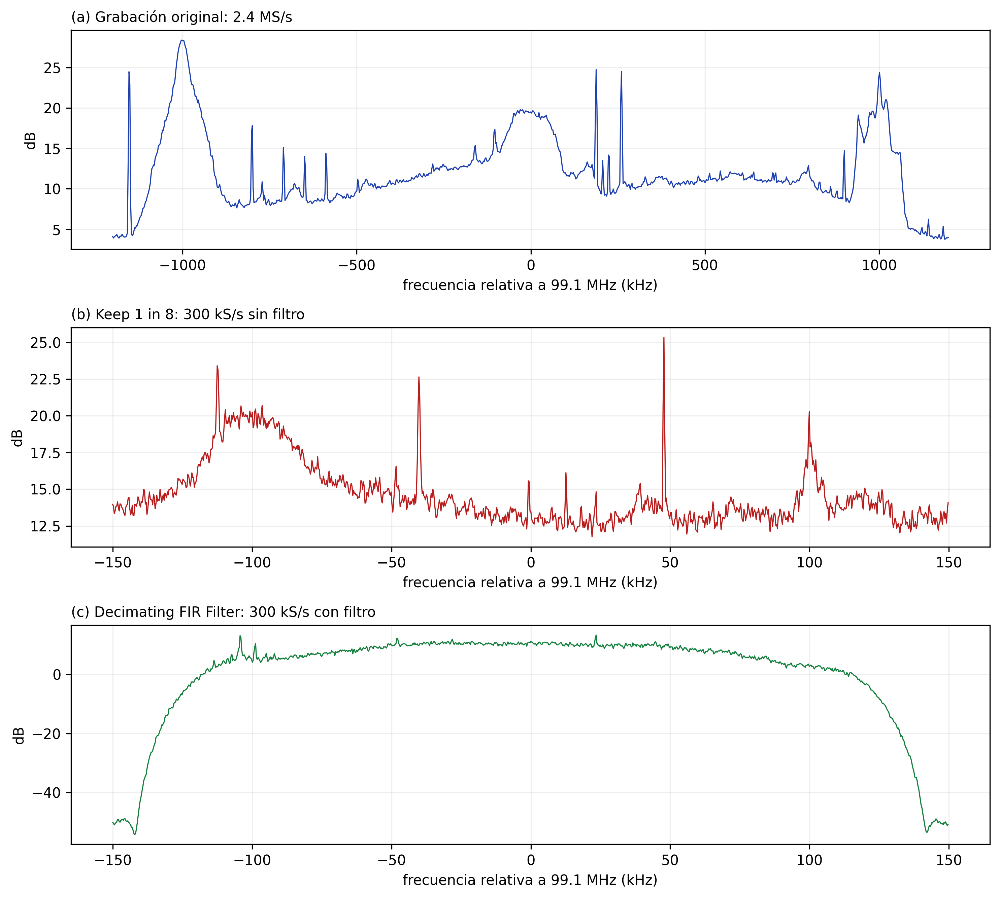

Laboratorio: muestreo, FFT, decimación e interpolación
Esta guía es para quien ya conecta bloques en GNU Radio pero todavía no domina la relación entre la frecuencia de muestreo \(f_s\), el tiempo, el número de muestras y el tamaño de la FFT. Continúa la Parte A de la Sesión 01, donde contaste bytes y muestras, y le añade el eje que allí faltaba: cada muestra ocupa además un instante.
Materiales, en la misma carpeta sdr/ de la Sesión 01:
| Archivo | Dónde va | Qué es |
|---|---|---|
gen_tono.py |
sdr/samples/ |
Genera tono_1kHz_32kSps.cu8. Sección 1 |
warmup_32k.grc |
sdr/gnuradio-flowgraphs/, porque lee ../samples/ |
Grafo de la sección 1 |
test2.grc |
sdr/gnuradio-flowgraphs/, ya lo tienes de la Sesión 01 |
Solución de referencia de la Parte C. Sección 2 |
decimacion.grc |
sdr/gnuradio-flowgraphs/, porque lee ../samples/ |
Comparación de decimación con y sin filtro. Sección 4 |
fm_99p1MHz_2p4Msps_g30.cu8 |
sdr/samples/ |
La grabación de la Sesión 01. Secciones 2, 4 y 6 |
1. Warm-up: el milisegundo que se puede contar
La grabación de la Sesión 01 tiene 24 millones de muestras y nadie puede mirarlas una a una. Esta sección usa un archivo tan simple que sí se puede: un tono de 1 kHz muestreado a 32 kS/s, donde un milisegundo cabe en 32 líneas de terminal.
1.1. Predecir con papel. Antes de ejecutar nada, responde:
- A 32 kS/s, ¿cuántas muestras hay en 1 ms?
- ¿Y en 1 s?
- El archivo que vamos a generar ocupa 6400 bytes en formato
.cu8. ¿Cuánto dura?
Basta una regla: el número de muestras es la tasa por la duración,
1.1. ¿Cuántas muestras y cuánto tiempo?
En 1 ms hay \(32\,000 \cdot 0.001 = 32\) muestras. Es el atajo: 32 kS/s, 32 muestras por milisegundo.
En 1 s hay 32 000.
Cada muestra compleja ocupa dos bytes, uno para I y otro para Q, así que 6400 bytes son 3200 muestras. Despejando la regla, \(T = N / f_s = 3200 / 32\,000 = 0.1\) s.
1.2. Generar y contar. Con el entorno (base) de radioconda activo y desde la carpeta sdr/, genera el archivo y pide a od sus primeros 64 bytes, dos por línea:
El primer comando responde tono_1kHz_32kSps.cu8: 6400 bytes, la cifra que usaste en 1.1. El segundo imprime esto:
0000000 228 128
0000002 226 147
0000004 220 166
0000006 211 183
0000008 198 198
0000010 183 211
0000012 166 220
0000014 147 226
0000016 128 228
0000018 108 226
0000020 89 220
0000022 72 211
0000024 57 198
0000026 44 183
0000028 35 166
0000030 29 147
0000032 28 128
0000034 29 108
0000036 35 89
0000038 44 72
0000040 57 57
0000042 72 44
0000044 89 35
0000046 108 29
0000048 127 28
0000050 147 29
0000052 166 35
0000054 183 44
0000056 198 57
0000058 211 72
0000060 220 89
0000062 226 108
0000064
Cómo leerlo:
-N64pide 64 bytes. A dos bytes por muestra son 32 muestras, y a 32 kS/s eso es exactamente el milisegundo de 1.1.- Salen 33 líneas. Las 32 primeras son muestras. La última,
0000064, no trae valores: es la dirección donde terminó la lectura. - La primera columna es la dirección, la posición en decimal del primer byte de la línea. Avanza de dos en dos, así que el índice de la muestra es n = dirección / 2: la línea
0000016es la muestra 8. - Tras la dirección vienen los dos bytes de la muestra, primero I y después Q, como en A2 y A5 de la Sesión 01.
Prueba ahora od -b, una opción que aparece en muchos tutoriales, sobre los mismos bytes:
La primera línea empieza por 0000000 344 200 342 223. Es el mismo archivo, así que ¿de dónde sale ese 344?
1.2. ¿Por qué od -b da 344?
Porque -b es la abreviatura de -t o1: escribe cada byte en octal, base 8. Los ocho bits son los mismos que escribe -tu1; solo cambia la base, como en el aviso de A4 de la Sesión 01. \(344_8 = 3 \cdot 64 + 4 \cdot 8 + 4 = 228\) y \(200_8 = 2 \cdot 64 = 128\): la primera muestra de la salida anterior.
Sin -A, también las direcciones salen en octal. La segunda línea, 0000020, es el byte \(2 \cdot 8 = 16\), la muestra 8, y empieza por 200 344: el (128, 228) de la línea 0000016. La última, 0000040, es 32, donde terminó la lectura.
Para ver las dos bases juntas, pide los dos formatos a la vez:
0000000 344 200
228 128
0000002 342 223
226 147
0000004 334 246
220 166
0000006 323 267
211 183
0000008
Cada muestra ocupa dos líneas: arriba en octal y debajo en decimal.
1.3. Los mismos bytes en GNU Radio. Abre warmup_32k.grc. La cadena es la de la Parte C de la Sesión 01, con estos cambios:
samp_ratevale32000y elFile Sourceleetono_1kHz_32kSps.cu8.- El
File SourcetieneRepeatenNoyLengthen 64.Lengthcuenta elementos del tipo de salida, que aquí esByte: son los 64 bytes que pediste aodcon-N64. Forman 32 muestras complejas, cada una un par (I, Q) del mismo instante; no son 64 muestras, ni 32 valores de I seguidos de 32 de Q. Add ConstyMultiply Constestán en bypass: el bloque deja pasar la señal sin tocarla, como un cable, y GRC lo pinta de amarillo claro para distinguirlo. Al Time Sink llegan los bytes del archivo, pasados a número real porUChar To Float, pero sin centrar ni escalar.- El Time Sink tiene
Number of Pointsen 32, así que dibuja 32 muestras, conY minen 0 yY maxen 256, la escala del byte. Marca cada muestra con un círculo azul para I y un cuadrado rojo para Q, como en la Figura 1 de más abajo.
Ejecútalo con F6. El Time Sink dibuja las 32 muestras y la imagen se queda quieta: tras 64 bytes el File Source deja de entregar datos, el flujo termina y el visor conserva lo último que recibió. Para volver a dibujarla, cierra la ventana y ejecuta otra vez.
El Frequency Sink también se abre, y con los bytes sin centrar su línea se sale por encima del eje alrededor de 0 kHz. Su lectura queda para 1.6.
Con el eje de 0 a 256, a ojo no se distingue 226 de 228. Para leer valores, pasa el cursor sobre la gráfica: junto a él aparecen su tiempo y su altura, por ejemplo 0.9770 ms, 172.4082. Son las coordenadas del cursor, no las de la muestra más cercana, así que hay que ponerlo encima del marcador. Para acercarte, arrastra con el botón izquierdo un rectángulo alrededor de los marcadores que te interesen y el visor ampliará esa zona. El botón derecho deshace un paso de zoom, y Ctrl más el botón derecho vuelve a la vista completa.
Compara la pantalla con la salida de od de 1.2, línea a línea. La línea de dirección 2n es la muestra n, y el Time Sink la coloca en \(t = n / f_s\). Busca las líneas 0000000, 0000016 y la última con valores. ¿Dónde está 0000064?
1.3. Cada línea de od en la pantalla
La línea 0000000 es n = 0, en 0 ms: el círculo de I está en 228 y el cuadrado de Q en 128.
La línea 0000016 es n = 8, en \(8 / 32\,000\) s = 0.25 ms: I ha bajado a 128 y Q ha subido a 228.
La última con valores, 0000062, es n = 31, en \(31 / 32\,000\) s = 0.96875 ms, el último punto de la pantalla, cerca de 0.97 ms: I en 226 y Q en 108.
0000064 no está: no trae muestra, solo marca dónde terminó la lectura. Por eso el último punto queda antes de la marca de 1 ms.
1.4. Encontrar los 90°. Busca el valor más alto de I y el valor más alto de Q, en la salida de od o en la imagen quieta del Time Sink. Anota en qué muestra está cada uno y cuántas muestras los separan.
1.4. ¿Dónde están los máximos?
I alcanza su máximo, 228, en la primera línea: dirección 0000000, muestra n = 0.
Q alcanza el mismo 228 en la dirección 0000016, muestra n = 8.
Los separan ocho muestras. Un tono de 1 kHz tiene período \(T = 1/f_0 = 1\) ms, y por la regla de 1.1 eso son \(f_s / f_0 = 32\) muestras por ciclo. Ocho son un cuarto de ciclo: 90°. Q hace lo mismo que I con un cuarto de ciclo de retraso. Son las dos proyecciones de una flecha que gira, la hélice que dibuja la Sesión 01 en 2.4.

Figura 1. Un milisegundo del tono, muestra a muestra: en cada posición n están los dos bytes de una línea de od, I y Q del mismo instante.
La línea discontinua es el cero de la señal, 127.5, el mismo que A6 de la Sesión 01 dedujo del promedio de la grabación. Cada tallo nace en ella y sube o baja hasta el valor del byte. Los puntos son los que dibujó el Time Sink en 1.3, que en lugar de tallos los une con líneas.
El círculo azul relleno es I y el cuadrado rojo hueco es Q. Comparten posición horizontal porque son los dos bytes de una misma línea de od, es decir, el mismo instante.
El eje inferior cuenta muestras y el superior, milisegundos. Las etiquetas de n = 0, 8, 16, 24 y 32 dan el índice, la dirección que imprime od, que es siempre 2n, y el par (I, Q).
Sigue los extremos: I arriba en n = 0, Q arriba en n = 8, I abajo en n = 16, Q abajo en n = 24. Q repite cada gesto de I un cuarto de ciclo después.
La muestra 32 ya pertenece al ciclo siguiente y vuelve al máximo de I. No aparece en la salida de 1.2, donde 0000064 sale sola, ni en el Time Sink de 1.3; para ver sus bytes pide dos más con -N66. Su Q vale 127 y no 128 como en n = 0, por el redondeo que explica el aviso siguiente.
Por qué el cero sale unas veces 128 y otras 127
En n = 8 el coseno vale cero y od da I = 128. En n = 24 también vale cero y da 127. El archivo no está mal: el cero del formato es 127.5, justo a medio camino entre dos enteros, y el byte tiene que caer a un lado.
Cuando la cuenta da exactamente 127.5, como en Q para n = 0 o en I para n = 8, NumPy redondea al entero par: 128. Cuando la aritmética de coma flotante deja un residuo diminuto, del orden de \(10^{-14}\), decide el signo de ese residuo. En n = 24 el residuo es \(-1.8 \times 10^{-14}\), la suma queda apenas por debajo de 127.5 y sale 127.
Por eso ciclos sucesivos pueden diferir en ±1 justo en esos valores.
Si en n = 8 también hay residuo, ¿por qué la suma queda en 127.5?
Porque es demasiado pequeño. En n = 8 el residuo vale \(+6.1 \times 10^{-15}\). Cerca de 127.5 la coma flotante solo distingue pasos de \(1.4 \times 10^{-14}\), y un residuo menor que medio paso, \(7.1 \times 10^{-15}\), se pierde al sumar. La suma queda en 127.5 exacto y se aplica el redondeo al par. El residuo de n = 24 supera ese medio paso y sí mueve la suma.
1.5. Centrar y escalar. Vuelve a GRC. Haz clic en Add Const, añade Multiply Const con Ctrl+clic y pulsa E, que es Enable y también está en el menú Edit y en el clic derecho. Los dos bloques deben perder el amarillo. Bypass, la B, pone el bypass pero no lo quita. En las propiedades del Time Sink pon Y min en -1 y Y max en 1, y ejecuta otra vez con F6.
La forma es la de 1.3, pero la curva azul arranca ahora en 0.788 y no en 228: los dos bloques hacen la cuenta de C2 de la Sesión 01, \((228 - 127.5) / 127.5 = 0.788\).
En el Frequency Sink ya no se sale nada por arriba. Con los bytes sin centrar se salían dos componentes: la constante 127.5, que es frecuencia 0, y el tono, todavía sin escalar. Add Const quitó la constante y Multiply Const bajó el tono a unos −2 dB.
Calcula qué altura deben tener Q e I en n = 8, que en el eje de tiempo es 0.25 ms, y compruébalo en la pantalla.
1.5. Las alturas en n = 8
Q vale 228, así que su altura es la misma que la de I en n = 0: \((228 - 127.5) / 127.5 = 0.788\).
I vale 128, así que su altura es \((128 - 127.5) / 127.5 = 0.0039\). En pantalla parece cero, pero no lo es: es el redondeo del aviso de 1.4.
Eso en el primer periodo, que es el que ves. En 14 de los 100 periodos del archivo ese byte es 127 y la altura, \(-0.0039\).
1.6. El tamaño de la FFT. Pasa al Frequency Sink. Tiene FFT Size en 32, Bandwidth (Hz) en samp_rate, Center Frequency (Hz) en 0 y Window Type en Rectangular.
FFT Sizees cuántas muestras junta el visor para calcular cada espectro, y también cuántos bins —las casillas de frecuencia de la FFT— devuelve. Con 32 junta 32 muestras: el mismo milisegundo congelado que imprimióody que dibuja el Time Sink.Bandwidth (Hz)va en hercios:samp_rateson 32 000 Hz, que GRC abrevia32ken el bloque. El eje del visor, en cambio, está rotulado en kHz.- El eje va de −16 a +16 kHz porque el centro es 0 y el ancho es
samp_rate: la FFT de una señal compleja muestra de \(-f_s/2\) a \(+f_s/2\), el ancho \(f_s\) entero y no \(f_s/2\), como ya apareció en C3 de la Sesión 01. - Los 32 bins se reparten esos 32 kHz, así que quedan separados 1000 Hz, de −16 a +15 kHz. No hay bin en +16 kHz porque +16 sería otra vez −16, igual que
0000064no trae muestra. - El tono cae exacto en el bin de +1 kHz y marca unos −2 dB, \(20 \log_{10}(0.79)\): su amplitud en decibelios.
- Sale en +1 kHz y no en −1 kHz por el orden de I y Q. En 1.4 viste que Q repite a I un cuarto de ciclo después: I es un coseno y Q un seno, y en la hélice de la Sesión 01 las copias de ese par se suman en \(+f_0\) y se cancelan en \(-f_0\). Si Q fuera por delante de I, la raya estaría en −1 kHz. Puedes comprobarlo cruzando las dos salidas del
Deinterleave.
La línea une los bins y sugiere valores entre ellos que la FFT no calculó. Para ver solo los 32 bins, haz clic con el botón central del ratón, la rueda, sobre el espectro; en estos visores el derecho no abre el menú, sino que deshace el zoom. Entra en Espectro, el menú de la línea, y elige ahí Line Style → None y Line Marker → Circle. Quedan 32 puntos sueltos: el tono arriba y los otros 31 abajo, entre unos −72 y −58 dB. Es un ajuste de la ventana y no del grafo, así que se pierde al volver a ejecutar.
¿De dónde salen los 31 puntos de abajo, y por qué no subir Y min para quitarlos?
En n = 1 la cuenta da 225.58, pero un byte solo admite enteros y guarda 226. Esa diferencia, repetida en cada muestra, es una señal pequeña que viaja sumada al tono, y la FFT la dibuja como a cualquier otra. Es el precio de los 256 niveles que definieron «ADC de 8 bits» en la Parte A de la Sesión 01.
El error del redondeo queda 47.8 dB por debajo del tono. Son los 49.9 dB que la Sesión 01 calcula para 8 bits, menos 2.1 dB porque el tono no usa todo el rango del byte: su amplitud es de 100 niveles y no de 127.5. Sumados, los 31 puntos quedan algo más abajo, a 48.8 dB, porque una parte de ese error cae en el mismo bin que el tono.
Subir Y min sacaría esos puntos de la pantalla, pero no de los datos.
Ahora cambia Offset del File Source a 64 y ejecuta otra vez. Offset cuenta bytes, igual que Length, así que el visor recibe las muestras 32 a 63: el segundo periodo del tono. Repite el ajuste de los puntos. ¿Es igual que el primero?
1.6. El segundo periodo
El tono sigue en +1 kHz y a unos −2 dB, pero faltan ocho puntos, los de −13, −9, −5, −1, +3, +7, +11 y +15 kHz. Esos bins caen por debajo de −140 dB, el borde inferior del eje, y sus marcadores no se ven. Con la línea continua aparecen como huecos que bajan hasta el fondo.
No todos los periodos del archivo son idénticos: difieren en ±1 justo donde la cuenta da 127.5, como explica el aviso de 1.4. Ese ±1 cambia el error del redondeo y, con él, los bins de abajo. Solo 26 de los 100 periodos se ven sin huecos, como el primero. Con Offset en \(64 k\) ves el periodo \(k + 1\).
Vuelve a poner Offset en 0 y cambia FFT Size a 1024. GRC solo acepta potencias de dos entre 32 y 32768: con otro valor, el nombre del bloque se pinta en rojo y GRC no deja generar ni ejecutar el grafo. Predice qué dibujará el Frequency Sink y ejecuta. Después, ¿qué Length hace falta para que llegue justo una FFT de 1024 muestras? Ponlo, predice cuánto se separan los bins, cuánto tiempo abarca la FFT y dónde estará la raya, y ejecuta.
1.6. ¿Qué cambió con 1024?
Con Length en 64 el espectro queda en blanco. El flujo trae 32 muestras y termina, y el visor necesita juntar 1024 para calcular un solo espectro.
Hace falta Length en 2048: Length cuenta bytes, y 1024 muestras de dos bytes cada una son 2048. Llegan 32 periodos del tono, justo una FFT. La separación entre bins baja a 32 000 / 1024 = 31.25 Hz.
Esa FFT abarca 1024 / 32 000 s = 32 ms: treinta y dos ciclos del tono en lugar de uno.
La raya sigue en 1 kHz y a unos −2 dB, ahora mucho más fina.
El Time Sink sigue dibujando 32 puntos, 1 ms: su Number of Points no cambió. El espectro mira ahora 32 veces más tiempo del que enseña el Time Sink.
¿Y el rizado entre las rayas?
Con 1024, el error del redondeo sigue dejando rayas en múltiplos de 1 kHz, y entre ellas, donde la FFT de 32 no tenía bins, aparece un rizado entre unos −85 y −113 dB.
Lo que se repite idéntico cada milisegundo solo tiene componentes en múltiplos de 1 kHz. El ±1 del redondeo, en cambio, cambia de un ciclo a otro. Con 32 muestras cada espectro ve un solo ciclo, así que ese cambio solo puede alterar la altura de los bins de 1 kHz: es lo que viste al pasar al segundo periodo. Con 1024 la FFT ve 32 ciclos distintos y tiene bins cada 31.25 Hz para mostrarlo.
Las dos cuentas salen de la regla de 1.1. Una FFT de \(N\) muestras abarca \(T = N / f_s\). Sus \(N\) bins se reparten el ancho \(f_s\), así que quedan a \(\Delta f = f_s / N\). Juntas, \(\Delta f = 1/T\): más resolución en frecuencia cuesta más tiempo de observación.
FFT Size \(N\) |
Tiempo que abarca, \(T = N / f_s\) | Separación entre bins, \(\Delta f = f_s / N\) |
|---|---|---|
| 32 | 1 ms | 1000 Hz |
| 1024 | 32 ms | 31.25 Hz |
La ventana es rectangular a propósito
Con la Blackman-Harris que trae test2.grc, la misma raya se ensancha varios bins. El efecto de la ventana se estudiará en la Sesión 02. Aquí se usa la rectangular para que el tono ocupe un solo bin.
2. Las mismas reglas donde no se pueden contar
La grabación de la Sesión 01 obedece a la misma regla que el tono, \(N = f_s \cdot T\), pero a 2.4 MS/s. A esa tasa un milisegundo ya no cabe en una pantalla de terminal. Aquí las muestras no se miran: se cuentan con comandos, y lo que dibujan los visores se calcula antes de ejecutar.
2.1. Predecir con papel. Desde la carpeta sdr/, pide el tamaño de la grabación:
wc -c cuenta bytes. Con < es la terminal la que abre el archivo y se lo pasa a wc por su entrada; wc no llega a conocer el nombre y por eso imprime solo el número. Responde 48000000. Con eso, y antes de ejecutar nada más:
- A 2.4 MS/s, ¿cuántas muestras hay en 1 ms? ¿Cuántos bytes ocupan?
- ¿Cuánto dura la grabación?
2.1. ¿Cuántas muestras y cuánto dura?
2.4 MS/s son 2400 kS/s, así que por el atajo de 1.1 en 1 ms hay 2400 muestras. A dos bytes por muestra ocupan 4800 bytes.
Los 48 000 000 bytes son 24 000 000 muestras, y \(T = N / f_s = 24\,000\,000 / 2\,400\,000 = 10\) s: los diez segundos de la grabación.
2.2. Contar sin mirar. Pide a od ese milisegundo, 4800 bytes con una muestra por línea, pero en lugar de leer las líneas, cuéntalas con wc -l:
Responde 2400: una línea por muestra, el milisegundo entero. El comando cambia una opción respecto a 1.2: -An en lugar de -Ad. ¿Cuántas líneas contaría wc -l con -Ad, y por qué?
2.2. ¿Por qué -An?
Con -Ad salen 2401. La línea de más es 0004800, la dirección donde terminó la lectura, sin valores, igual que 0000064 en 1.2.
-An es la opción de A4 de la Sesión 01: quita la columna de direcciones y, con ella, esa última línea. Así wc -l cuenta solo muestras.
2.3. Lo que dibuja test2.grc. Abre test2.grc, la solución de referencia de la Parte C de la Sesión 01, y ejecútalo con F6 sin cambiar nada, tampoco el deslizador Frequency. Con una grabación como fuente, ese deslizador solo cambia el centro del Frequency Sink, freq*M: reetiqueta el eje, no sintoniza nada. Su Time Sink tiene Number of Points en 1024 y su Frequency Sink, FFT Size también en 1024. Antes de mirar la pantalla, calcula con las cuentas de 1.6 cuánto tiempo abarca cada imagen y cuánto se separan los bins.
En pantalla comprueba lo que está rotulado: el tiempo en el eje del Time Sink y los 2.4 MHz que abarca el eje del Frequency Sink. La separación entre bins no aparece en ningún eje; sale de dividir ese ancho entre el número de bins.
El Time Sink dibuja dos trazas, Signal 1 en azul y Signal 2 en rojo: este grafo no las renombró como el de 1.3. Signal 1 es I, la parte real, y Signal 2 es Q, pero ya no se leen como el tono: cada muestra es la suma, en ese instante, de todo lo que cabe en los 2.4 MHz —las emisoras, fuertes y débiles, y el ruido—, y en pantalla parece ruido.
El Frequency Sink usa la ventana Blackman-Harris y no la rectangular de 1.6: cambia cuánto se derrama cada componente sobre los bins vecinos, como avisa la nota del final de la sección 1, pero no dónde están los bins, que siguen separados \(f_s / N\).
2.3. ¿Cuánto tiempo y cuántos hercios?
El Time Sink dibuja 1024 / 2 400 000 s = 426.7 µs, menos de medio milisegundo. Su eje, rotulado Time (us), va de 0 a unos 427: GNU Radio escribe us por µs.
En el Frequency Sink los bins quedan a 2 400 000 / 1024 = 2343.75 Hz. Los 1024 bins se reparten un eje de 2.4 MHz, de 97.9 a 100.3 MHz, el intervalo de C3 de la Sesión 01.
Cada espectro sale también de 426.7 µs de señal: el mismo \(N\) y la misma \(f_s\) que el Time Sink dan el mismo \(T = N / f_s\).
2.4. Ajustar los visores. ¿Qué Number of Points hay que poner al Time Sink para ver exactamente 1 ms? ¿Qué FFT Size daría bins de 1 kHz, como los de 1.6? ¿Acepta GRC los dos valores?
2.4. 1 ms y 1 kHz a 2.4 MS/s
Por el atajo de 1.1, 1 ms son 2400 muestras. Number of Points no exige potencia de dos, así que con 2400 el eje del Time Sink llega a 1000 us.
Bins de 1 kHz piden \(N = f_s / \Delta f = 2\,400\,000 / 1000 = 2400\). Pero 2400 no es potencia de dos, y como avisa 1.6, GRC no deja generar el grafo con ese FFT Size. La potencia de dos más cercana es 2048: bins a 2 400 000 / 2048 = 1171.875 Hz, y cada espectro abarca 2048 / 2 400 000 s = 853.3 µs.
Si hace falta separar al menos 1 kHz, sirve 4096: bins a 585.9 Hz, a cambio de 1.7 ms por espectro.
Las cuentas son las de la sección 1; solo cambió la escala.
| \(N\) a 2.4 MS/s | Tiempo que abarca, \(T = N / f_s\) | Separación entre bins, \(\Delta f = f_s / N\) |
|---|---|---|
| 1024 | 426.7 µs | 2343.75 Hz |
| 2048 | 853.3 µs | 1171.875 Hz |
| 2400 | 1 ms | 1000 Hz |
| 4096 | 1.7 ms | 585.9 Hz |
2400 vale como Number of Points, pero no como FFT Size.
3. Tres tasas de muestreo reales
Pendiente
Esta parte necesita dos grabaciones nuevas, a 1.2 MS/s y a 300 kS/s, que todavía no están publicadas.
Cuando estén disponibles, se compararán con la grabación oficial de 2.4 MS/s. La frecuencia central, la ganancia, la antena y la duración se mantendrán iguales; solo cambiará la tasa de muestreo.
Con el entorno (base) activo y desde la raíz sdr/, crea las dos capturas de diez segundos:
rtl_sdr -f 99.1e6 -s 1200000 -g 30 -n 12000000 samples/fm_99p1MHz_1p2Msps_g30.cu8
rtl_sdr -f 99.1e6 -s 300000 -g 30 -n 3000000 samples/fm_99p1MHz_0p3Msps_g30.cu8
La primera debe ocupar 24 000 000 bytes y la segunda 6 000 000 bytes. Conserva los mismos datos de antena y ubicación que en la captura oficial; después comparte ambas desde la carpeta samples del curso, con su SHA-256 y metadatos.
- La ventana visible se estrecha a ±1.2 MHz y ±150 kHz: cada captura contiene menos banda alrededor de la emisora central.
- Los archivos de diez segundos pesan 24 y 6 MB, porque el número de muestras es proporcional a \(f_s\).
- Abre cada archivo en
test2.grc, cambiasamp_rate.
4. Decimación en software
La grabación original contiene muestras complejas a 2.4 MS/s. En esta sección se construyen dos versiones de ella a 300 kS/s, sin usar de nuevo el dongle. Las dos reducen la tasa por el mismo factor,
Una señal compleja a 300 kS/s ocupa una ventana de frecuencia de −150 a +150 kHz alrededor de 0 Hz. La emisora sintonizada a 99.1 MHz sigue en 0 Hz; lo que cambia es cuánto contenido vecino puede sobrevivir alrededor de ella.
La comparación sirve para separar dos ideas que suelen confundirse:
- Reducir la tasa significa entregar menos muestras por segundo. Aquí se conservará una de cada ocho.
- Reducir el espectro correctamente exige preparar la señal antes de retirar muestras. El contenido que no cabe en la nueva ventana debe ser atenuado primero.
4.1. Preparar la comparación. El estudiante abre decimacion.grc en GNU Radio Companion y lo ejecuta con F6. El grafo lee la grabación oficial, centra y escala sus bytes como test2.grc, y a partir de esa señal compleja crea tres caminos:
| Camino | Bloque principal | Tasa de salida | Qué hace |
|---|---|---|---|
| Referencia | — | 2.4 MS/s | Conserva la grabación original. |
| Descarte directo | Keep 1 in N, con N = D = 8 |
300 kS/s | Conserva una muestra y elimina las siete siguientes. |
| Decimación correcta | Decimating FIR Filter, con D = 8 |
300 kS/s | Filtra primero y después conserva una muestra de cada ocho. |
Los tres visores muestran la misma zona central de la grabación, pero sus ejes no cubren lo mismo. El visor de referencia llega de −1.2 a +1.2 MHz. Los otros dos llegan de −150 a +150 kHz. Por eso no basta con ampliar o reducir el eje de una gráfica: se ha cambiado la señal que llega al visor.
4.2. Qué falla al solo retirar muestras. Keep 1 in N es útil para demostrar el problema, pero no es un decimador completo. No pregunta qué frecuencias se están eliminando; simplemente toma las muestras 0, 8, 16, 24 y así sucesivamente.
Una componente que estaba fuera de la nueva ventana no desaparece al hacer esto. Sus valores, vistos ahora con menos instantes por segundo, pueden parecer una componente distinta dentro de la ventana. Ese desplazamiento se llama aliasing o plegamiento espectral.
En la grabación usada aquí aparece contenido intenso alrededor de −1.00 MHz relativo a 99.1 MHz, aproximadamente 98.10 MHz en frecuencia absoluta. Al descartar una de cada ocho muestras sin filtrar, aparece alrededor de −100 kHz dentro de la nueva ventana. No es una nueva señal en −100 kHz: es contenido lejano que se ha plegado allí.
4.3. Filtrar antes de retirar. La tercera rama evita ese error. Su bloque Decimating FIR Filter usa este filtro:
Con samp_rate = 2400000 y D = 8, el filtro deja pasar con comodidad hasta 120 kHz, hace la transición entre 120 y 150 kHz y atenúa lo que queda fuera. Tiene 193 coeficientes y usa la ventana Hamming predeterminada de GNU Radio. Solo después de esa preparación el bloque toma una muestra de cada ocho.

Figura 2. Decimación por ocho de la grabación oficial: sin filtro las señales fuera de la nueva banda se pliegan; con un filtro FIR previo solo se conserva la banda central.
En (a), el eje completo permite ver contenido hasta ±1.2 MHz. En particular, hay actividad importante cerca de −1 MHz y +1 MHz que no cabe en una señal a 300 kS/s.
En (b), el eje ya termina en ±150 kHz, pero aparecen picos y una banda ancha cerca de −100 kHz y +100 kHz. Vienen de posiciones alejadas del panel (a); no pertenecían originalmente a esa parte central del espectro. Es la huella visible del plegamiento.
En (c), la línea verde conserva la región alrededor de 0 Hz y cae con fuerza al acercarse a los bordes. Los picos plegados que se veían en (b) ya no llegan al resultado porque el filtro los atenuó antes de retirar las muestras. La caída no es vertical: entre 120 y 150 kHz está la banda de transición necesaria para que un filtro real pase suavemente de «dejar pasar» a «atenuar».
El proceso que realiza esta tercera rama es la misma idea que ya aparece dentro del receptor de la Sesión 01: tras convertir la señal a I/Q, el receptor filtra y reduce la tasa antes de enviar las muestras por USB. Aquí la operación se observa después de grabar, con tres visores que permiten comparar sus consecuencias.
4.4. Comprobar una reducción menor. El estudiante cambia D de 8 a 2 y ejecuta de nuevo. La tasa de salida pasa a 1.2 MS/s y cada uno de los dos visores inferiores debe configurarse automáticamente para un ancho de samp_rate/D: de −600 a +600 kHz.
Antes de mirar los visores, el estudiante debe anotar una predicción: ¿qué contenido de la captura original queda fuera de ±600 kHz?, ¿podría aparecer dentro de ese intervalo si se usa solo Keep 1 in N? Después debe comparar las dos ramas y describir únicamente lo observado: qué picos aparecen sin filtro, cuáles desaparecen con el FIR y si la diferencia es menor o mayor que con D = 8.
4.4. ¿Qué representa la señal de −100 kHz?
No representa necesariamente una señal que estuviera a −100 kHz de la emisora central. En la comparación de D = 8, el contenido próximo a −1 MHz de la grabación original se reubica cerca de −100 kHz cuando se retiran muestras sin filtro. Es una copia plegada por el cambio de tasa.
La rama FIR no «borra una emisora en −100 kHz»: impide que el contenido de fuera de ±150 kHz llegue a plegarse allí. Por eso el orden importa: primero filtrar y después descartar.